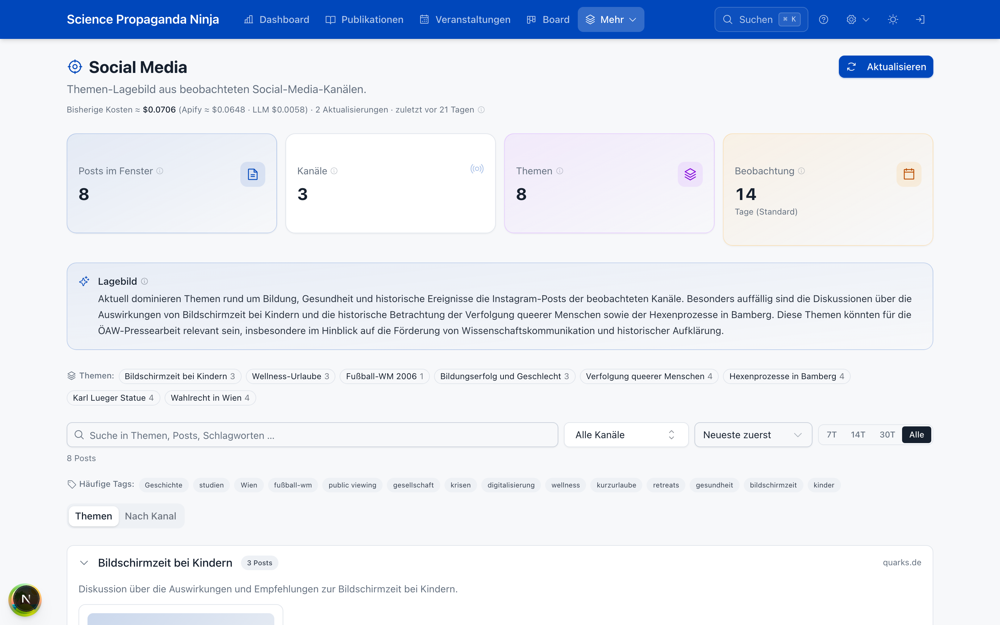
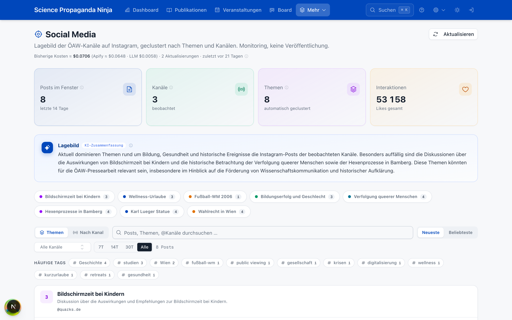
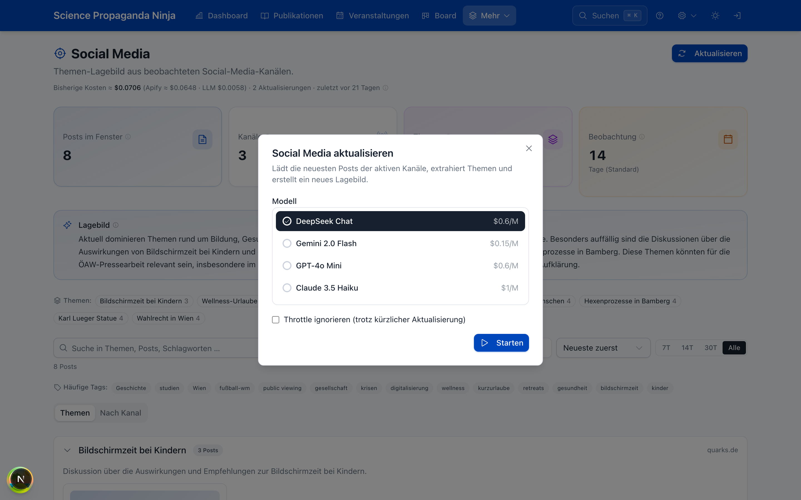
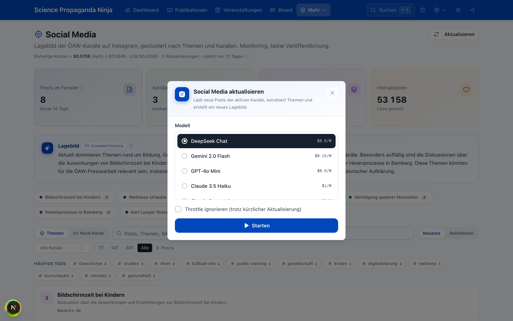
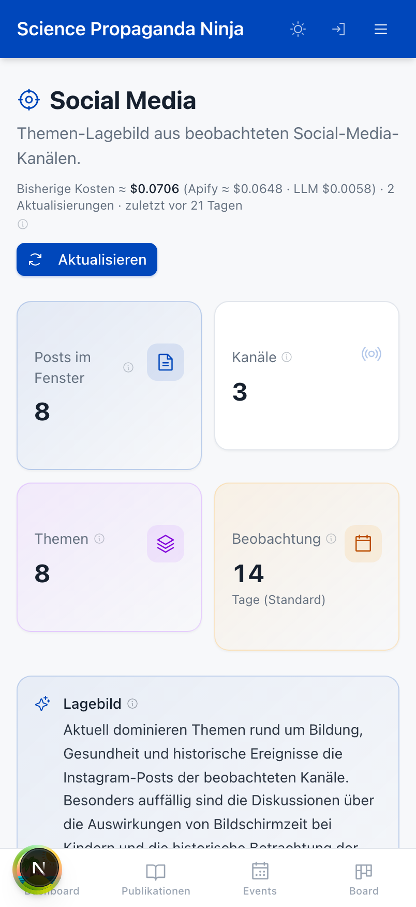
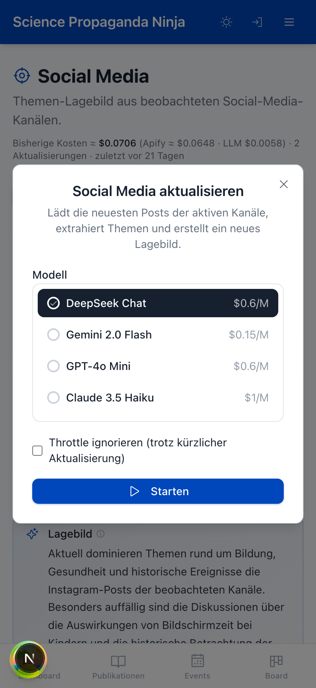
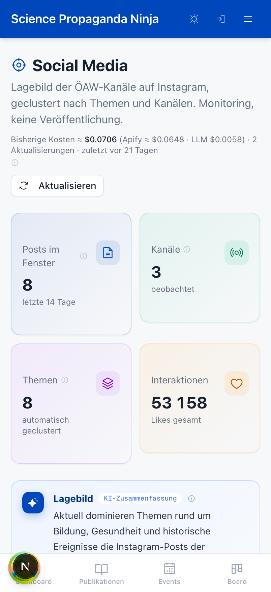
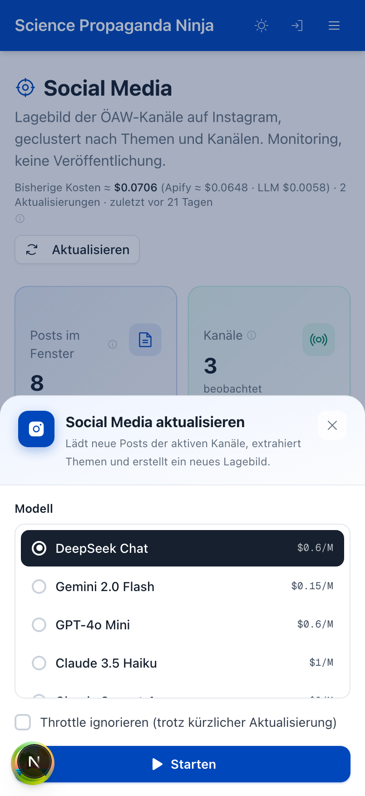

Von Freitag bis Montag ist aus der Relevanz-Auswertung ein zusammenhängendes Redaktionswerkzeug geworden: ein eigenes Kanban-Board löst MeisterTask ab, eine durchgängige Designsprache ersetzt die Standard-Bausteine, alles gibt es jetzt auch als native App am Handy — und die Datenbank läuft nun auf eigener Infrastruktur.
Fünf Stränge, die zusammen ein Ziel verfolgen: die Redaktionsarbeit von der Sichtung bis zur Veröffentlichung in einem Werkzeug zu bündeln — im Erscheinungsbild der Akademie und auf eigener Infrastruktur.
Die Spalten sind keine abstrakten Status, sondern die tatsächlichen Ausspielkanäle der Abteilung. Jede Karte ist eine Geschichte mit ihrer Verwertungs-Checkliste — und lässt sich direkt aus einer bewerteten Publikation oder Veranstaltung anlegen.
Nachbau im tatsächlichen Board-Design · echte Kanäle, Karten-Metadaten und Smart-Objekt-Referenzen.
Externes Werkzeug, generische Abschnitte, keine Verbindung zu den Relevanz-Scores oder zur Triage. Doppelte Datenpflege: was hier lag, wusste nichts von den bewerteten Publikationen und Events nebenan.
Im eigenen Toolkit. Ein Klick aus der bewerteten Publikation erzeugt die Karte samt Kanal-Checkliste; die Referenz bleibt lebendig verknüpft. Eine Datenbasis, ein Werkzeug.
PM/Presse, Web, Blog GÖ, Podcast, Events, Screens, Science Pop, Zeitlos — die Spalten bilden die echten Ausspielwege ab. Getönte Kanalköpfe machen jede Spalte auf einen Blick erkennbar.
Phase 2 · Kanban-KernEine relevante Publikation oder Veranstaltung wird per Klick zur Board-Karte — vorbefüllt mit Titel und der passenden Format-Checkliste. Score und Herkunft bleiben sichtbar verknüpft.
Phase 4 · Triage-IntegrationEvents, Publikationen und YouTube-Videos hängen als typisierte Referenzen mit Vorschaubild an einer Karte — bidirektional, mit gespiegeltem Thumbnail. Neu am Sonntag gebaut.
Variante B · ReferenzenKommentare mit Markdown, Datei-Anhänge mit Thumbnail-Vorschau, Beobachter und Live-Aktualisierung — mehrere Redakteur:innen sehen dieselbe Karte ohne Neuladen.
Phase 3 · KollaborationKanäle nach links/rechts verschieben, Aufgaben nach Fälligkeit oder alphabetisch anordnen, einzelne Kanäle „nur für mich ausblenden" — jeweils über das „…"-Menü am Spaltenkopf.
Spalten-MenüErledigte Karten wandern per „Abgeschlossene archivieren" aus dem Blickfeld, bleiben aber im Archiv-Modal auffindbar. Rang-Kollisionen mit archivierten Karten sind sauber gelöst.
Karten-ArchivDas über Monate gewachsene Erscheinungsbild wurde zu klaren Regeln verfestigt: ÖAW-Blau als einzige Marke, ein kühl getöntes Slate-Neutral, Farbe nur als Information. Diese Seite selbst ist in diesem System gebaut.
Neutrales Stock-Grau, ein violettes Zufalls-Primär, generische Icons. Sah aus wie jedes andere Baukasten-Interface.
Kühles Slate-Neutral, ÖAW-Blau als Marke, Mono für Zahlen, Phosphor-Icons. Score wird zur farbcodierten Kennzahl.
Die App wurde von lucide auf Phosphor umgestellt — über ein zentrales Mapping-Modul, damit ein Icon-Wechsel überall gleichzeitig greift statt Screen für Screen.
Rollout · Phase CEin neuer Erscheinungsbild-Umschalter gibt dem Board pro Person mehr oder weniger Wert-Kontrast — schwebende Karten in einer neutralen Mulde, gesättigte Kanalköpfe. Persönlich gespeichert.
Board-TiefeDieselbe Designsprache, jetzt auf die Bestands-Screens angewandt. Die Publikations-Liste stellt den Story-Score nach vorn; die Detailansicht wurde in zwei Spalten neu gebaut — links die Redaktions-Bausteine, rechts die dauerhaft sichtbare Analyse.
Score als graue Zahl, kein Farbsignal, generische Zeilen.
Ein Innsbrucker Team hat gezeigt, dass sich Rechenfehler in Quantencomputern mit Lichtteilchen korrigieren lassen. Bewertung und Text untereinander, Analyse scrollt weg.
Rechenfehler lassen sich mit Lichtteilchen statt aufwendiger Kühlung korrigieren — ein möglicher Wendepunkt.
Veranstaltungen lassen sich als Entscheidungs-Tabelle oder als Monats-Kalender sichten. Der Kalender wurde vollständig an die Design-Tokens gebunden: Score wird zur Chip-Farbe, die Entscheidung zum Symbol.
Alles gleich blau, keine Relevanz, keine Entscheidung — und mehrtägige Termine als Block je Tag wiederholt.
Score wird zur Balkenfarbe, die Entscheidung zum Symbol — und mehrtägige Veranstaltungen laufen als ein durchgehender Balken über die Tage.
Das Dashboard wurde umgebaut: eine Redaktionsboard-Kachel mit den fälligen Karten steht jetzt oben, darunter Kennzahlen und die Verteilung der Story-Scores — der Einstieg in den Redaktionstag auf einer Fläche.
Nackte Kennzahlen, kein Bezug zum Redaktionsalltag.
In sechs Ebenen (M1–M6) bekam das Toolkit eine native App-Anmutung: eine Bottom-Tab-Leiste, pro Screen ein eigener App-Header und Detailansichten, die als Bottom-Sheet von unten aufziehen.
Vorher lag nur die Desktop-Seite verkleinert am Handy — links. Rechts das Ergebnis: eine echte App-Anmutung.
Feste Navigationsleiste unten mit den Kernbereichen — der Daumen-freundliche App-Standard.
Native-ShellJeder Screen bekommt einen eigenen, farblich passenden Kopf statt einer generischen Web-Leiste.
Native-ShellDashboard, Publikationen und Veranstaltungen als Mobile-Ebenen; Details ziehen als Sheet von unten auf.
Native-ShellAm Montag kam der Unterbau dran — angestoßen durch das Traffic-Limit des Cloud-Tarifs, das die Anmeldung lahmgelegt hatte. Die Datenbank zieht auf eine selbst-gehostete Supabase-Instanz auf dem eigenen Server, dorthin, wo bereits der Bild-Speicher der Redaktion liegt.
Speicher und Traffic wachsen mit dem Projekt, nicht mit dem Tarif. Das ständige Trimmen von Indizes und Anhängen entfällt.
Skaliert mitPublikations- und Redaktionsdaten liegen auf selbst-kontrollierter, ÖAW-naher Infrastruktur statt bei einem externen Anbieter.
Eigene KontrolleDatenbank und Bild-Speicher (MinIO) laufen jetzt auf demselben Server — eine Infrastruktur, ein Betrieb, ein Backup-Konzept.
KonsolidiertHinter dem Passwort-Gate steht jetzt eine Supabase-Anmeldung. Kommentare, Zuständigkeiten und Aktivitäten am Board tragen einen echten Namen — Grundlage für die Zusammenarbeit im Team.
Auth · Phase 1Eine Weiterleitungs-Lücke in der Anmeldung (Open-Redirect über einen Backslash-Trick) wurde noch am Freitag geschlossen — bevor irgendetwas davon in Betrieb ging.
HärtungDer Kern steht und ist live. Als Nächstes: die vollständige Ablösung von MeisterTask (Datenübernahme), ein visueller Feinschliff-Durchgang über alle Screens und die Anbindung der letzten Bestands-Ansichten an das neue Design-System.
Das Lagebild der ÖAW-Kanäle — neu gebaut.
Der Social-Media-Bereich wurde vollständig nach dem Design-Mock neu aufgebaut (Session vom 6. Juli): Kennzahlen mit Interaktions-Summe, farbige Themen-Chips, immer offene Themen- und Kanal-Gruppen mit Top-Post-Markierung — und ein neues Aktualisierungs-Modell mit animiertem Drei-Phasen-Ablauf. Erstmals mit echten Vorher/Nachher-Screenshots statt Nachbauten.








Themen & Kanäle als offene Gruppen
Statt Accordion: immer sichtbare Gruppen-Karten mit Themen-Zähler bzw. Kanal-Avatar, Drei-Spalten-Post-Raster und „Ältere anzeigen".
Top-Post & kategoriale Akzente
Die interaktionsstärksten Posts tragen ein Flame-Badge; Themen und Kanäle bekommen stabile Akzentfarben, die Chips, Badges und Kanal-Punkte teilen.
Aktualisieren mit Belohnungsmoment
Drei Phasen — Posts laden, Themen analysieren, Lagebild erstellen — als animierter Stepper mit füllenden Verbindungslinien, Live-Metriken und Kosten. Mobil als Bottom-Sheet.